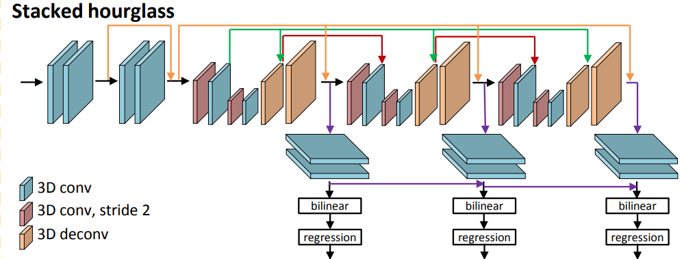
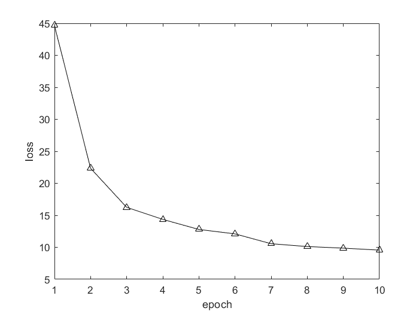
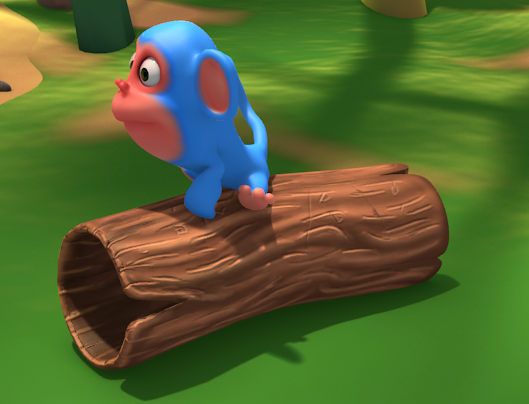
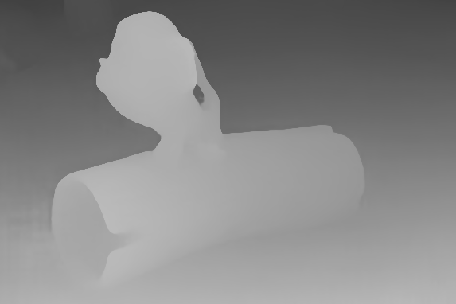
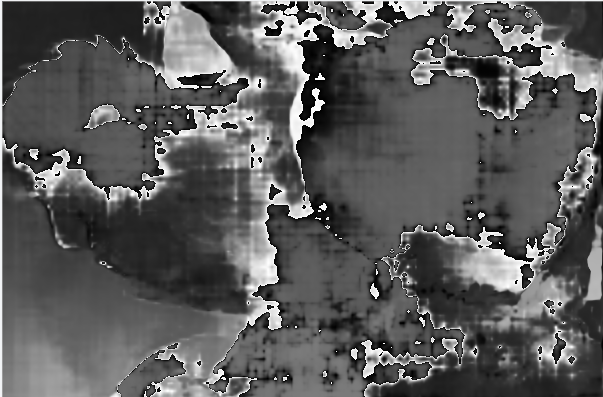

Pyramid Stereo Matching Network
PSMNet
1.Intros
比较早期的一个双目匹配网络，传统方法利用连续性等约束无法在一些病态区域（遮挡、无纹理等）做到精确配准，因此本文提出了一种利用上下文信息的网络结构。首先，利用空洞卷积扩大了网络的感受域，并用金字塔池化层融合不同尺度上。最后用stacked hourglass结构进行正则化以及中间自监督机制得到结果。
2.A Few Points
2.1空间金字塔池化的思想
我觉得这一步主要有两个操作，一是空洞卷积，扩大池化层的感受域；而是先通过下采样得到不同分辨率的特征，再通过上采样把它们叠在一起。
感受域其实就是一层网络输出里每一个格子对应的原图上的范围，比如原图上每一个像素的感受域就是一个像素，而对图像采用2*2的普通卷积，那么输出的每一个像素就对应原图2*2大小的范围。因此空洞卷积就能扩大输出的感受域。
2.2stacked hourglass结构
这一步有点像是在不同分辨率下的残差网络。原文中对比了直接使用残差网络和这一结构的效果，直接使用残差网络的效果远不如stacked hourglass结构。这个结构由连续三个不同分辨率下的残差网络构成，如下图。

在训练阶段，每一个部分都会输出一个视差的结果用于中间的监督训练。训练的loss由三个视差输出的加权得到。
2.3cost volumn的理解
之前在看立体综述那个ppt和其他论文的时候对cost volumn一直不太理解，这一次复现的时候通过编程才知道了其含义。从数学形式上，它是一个四维的张量，大小为H*W*DS(S为特征数\2)，它通过将特征图平移，得到了不同视差下特征对应的张量。比如在d=0这一维，即原左图和右图位置直接一一对应，因此分别将左图的特征填入d=0,s=0~S/2这一维，将右图填入d=0,s=S/2+1~S这一维；在d=1这一维，则左图特征填入位置不变，右图填入位置向右平移一个单位，空余位置补0.
2.4多通道卷积和三维卷积的理解
之前一直比较疑惑多通道卷积和三维卷积的区别，因为从计算方式和卷积核的大小上来看它们是相似的。经过越哥的讲解以后才知道卷积的维数不取决于它的卷积核的通道数，而是它在滑动过程中有几个自由度，比如RGB图像的二维卷积的卷积核虽然有三个通道，但它只能在H和W方向上滑动，在C方向上其通道数就等于图像通道数，无法滑动，因此只有两个自由度；而若在一段RGB视频的图像序列上，三通道卷积核会在C方向上滑动检测一些例如运动方面的信息，这就是三维卷积。
3.复现结果
我在复现时，由于电脑比较拉，所以把输入的分辨率调小为原文的一半，数据集也只采用了SceneFlow的Monkaka数据集，得到的结果不理想。训练的loss如下：

最终loss收敛于10左右，而在测试时loss大概在40-60，匹配结果只有在一些很明显的边沿才能看到一些。根据我的推测是因为当输入分辨率过小时，图像由于尺寸问题无法学习到上下文信息，并且训练集样本量也较少（只有3000）导致匹配的误差很大。
最后使用原文预训练好的模型测试了一下，loss为0.65，定性图如下：
|  |  |
|---|---|
结果看上去不错，但是对于大头照会错的比较离谱（可能是因为Monkaka皮肤太好没什么纹理的缘故？）：
|  | |
|---|---|
另外，还踩了个坑，把tensor转PIL图像的时候记得乘以255，否则结果显示出来就会有很多毛刺。